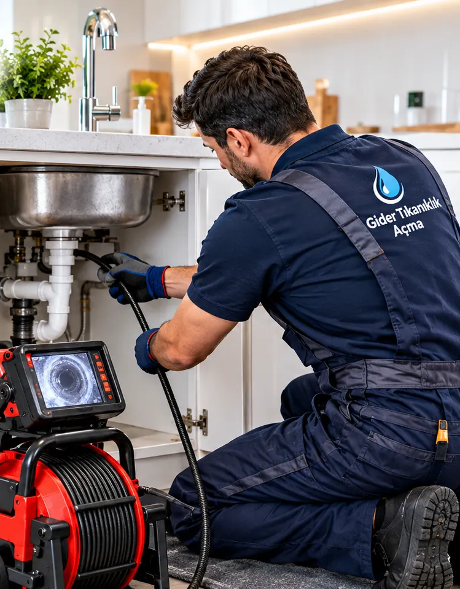

Ataşehir, İstanbul · 7/24
Ataşehir Tuvalet Tıkanıklığı Açma
Ataşehir ve çevresinde tuvalet tıkanıklığı açma işleri için buradayız. Klozet, asma klozet ve alaturka tuvalet tıkanıklığını çoğu zaman klozeti yerinden sökmeden, makineyle açıyoruz. Tıkanıklığın yerini gerektiğinde kamerayla görüyoruz. Anadolu yakasında adrese ortalama 30 dakikada ulaşıyoruz.

- 7/24 hizmetGece, hafta sonu ve bayramda da arayabilirsiniz.
- Ortalama 30 dakikaAnadolu yakasında adrese ortalama 30 dakikada ulaşıyoruz.
- Kırmadan, kameralıTıkanıklığın yerini gerektiğinde kamerayla görüp kırmadan açıyoruz.
- Fiyat öncedenFiyatı işe başlamadan söylüyor, onayınız olmadan başlamıyoruz.
Ataşehir'de tuvalet tıkanıklığı açma servisine nasıl ulaşırsınız?
Ataşehir'e D-100 ve TEM'in arasından giriyoruz; Kozyatağı, Kayışdağı Caddesi ya da Ataşehir Bulvarı'ndan hangisi açıksa oradan. Bize 0501 355 00 34 numarasından 7/24 ulaşabilir ya da WhatsApp'tan yazabilirsiniz. Anadolu yakasında adrese ortalama 30 dakikada ulaşıyoruz.
Tavsiyemiz: Su yükseliyorsa sifona bir daha basmayın, rezervuarın altındaki ara musluğu kapatın; sonra bizi arayın.
Ataşehir'de tuvalet tıkanıklığı açma neden gerekir?
Ataşehir'in yeni sitelerinde gömme rezervuarlı asma klozetler yaygın; sifonu duvarın içinde kaldığı için tıkanıklığa dışarıdan ulaşmak zor. Klozeti sökmeden, ağızdan uygun spiralle giriyoruz. Ferhatpaşa ve Esatpaşa'daki eski binalarda ise tuvalet borusu farklı çapta bir hatta bağlandığı için tıkanma bu geçiş noktasında oluyor.
Rezidans ve yüksek bloklarda kolon çok uzun; üst katlardan inen su zemin katlara geldiğinde ciddi bir hıza ulaşıyor ve mutfak yağı alt dirsekte toplanıyor. Ferhatpaşa ve Esatpaşa'da kat eklenmiş binalarda ise farklı dönemlerde döşenmiş, birbirine uymayan çapta borular birleşmiş durumda. Daire içinde en sık sorun, ankastre mutfaklarda tezgâhın altına sıkıştırılmış sifonlar.
Dar ya da yanlış eğimli bağlantı
Alaturkadan klozete çevrilmiş tuvaletlerde altta kalan eski dirsek ya da tadilatta eğimi az verilmiş boru suyu yavaşlatır.
Hijyenik ped ve bebek bezi
Suyu emip şişer, dirseğe sıkışır. Arkasından gelen kâğıt da üstüne yığılır.
Aynı sorun kısa sürede tekrar ediyorsa açmakla geçmeyen bir sebep vardır; bunu kameralı tıkanıklık tespiti ile buluyoruz.
Ataşehir'de tuvalet tıkanıklığı açma nasıl yapılır? Kırmadan çözüm
Tuvalet tıkanıklığını çoğu zaman klozeti sökmeden, klozetin ağzından spiral makineyle açıyoruz. Klozet için ucu korumalı spiral kullanıyoruz ki sırlı yüzey çizilmesin. Asma klozette ya da sıkışmış sert bir cisimde sökmek gerekebilir; söktüğümüzde contayı yenileyip sızdırmazlığı test ediyoruz. Tıkanıklık tekrar ediyorsa makaralı kamerayı hattın içine sürüp sebebi görüyoruz.
Ataşehir'de tuvalet tıkanıklığına geldiğimizde önce suyun nerede durduğunu ayırıyoruz: klozetin kendi dirseği mi, daireden kolona giden hat mı, yoksa binanın ortak kolonu mu?
Asma klozet
Gömme rezervuarlı klozette bağlantı duvarın içinde. Sökmek gerekirse contayı yenileyip sızdırmazlığı test ederek geri takıyoruz.
Koku ve fokurdama
Tıkanıklık olmadan da koku gelebilir: kuruyan sifon suyu, gevşeyen conta, tıkalı havalık. Sebebi ayırıp ona göre çözüyoruz.
Alaturka tuvalet
Alaturkanın dirseği derin ve dar; spirali bu dirsekten geçirip tıkacı parçalıyor, ardından hattı suyla deniyoruz.
Yere monte klozet
Sifon çekince yükselen suyu klozetin kendi dirseğinden spiral makineyle açıyoruz; klozet yerinde kalıyor.
Ataşehir tuvalet tıkanıklığı açma fiyatları ne kadar?
Her tıkanıklık farklı olduğu için telefonda kesin fiyat vermiyoruz; video ya da fotoğrafla yaklaşık bilgi verebiliyoruz. Fiyatı usta yerinde gördükten sonra, işe başlamadan söylüyoruz; onayınızı almadan işe başlamıyoruz.
Ataşehir'de fiyatı asıl ayıran soru, tıkanıklığın daire içinde mi yoksa sitenin ortak hattında mı olduğu. Bir daire sifonu ile bir sitenin bloklar arasındaki ortak hattı aynı emeği istemiyor. Kamerayla hattın neresinde olduğuna bakıyor, yönetimle konuşulması gerekiyorsa bunu belirtiyor ve tutarı onayınızı almadan önce söylüyoruz.
Tıkanıklığın yeri
Klozet dirseğindeki tıkanıklık ile bina kolonundaki tıkanıklık farklı emek ister.
Klozetin tipi
Yere monte klozet ile asma klozet aynı iş değildir; asma klozette söküm gerekebilir.
İlçe genelinde fiyatı etkileyen durumları Ataşehir tıkanıklık açma sayfamızda da anlattık.
Ataşehir'de tuvalet tıkanıklığı açma için belediyeyi aramalı mısınız?
Ataşehir'de tuvaletiniz tıkandığında belediye ya da İSKİ evinize ekip göndermez; klozet, daire içindeki boru ve bina kolonu mülk sahibinin sorumluluğundadır.
Ataşehir Belediyesi evinizdeki gidere ekip göndermez; İstanbul'un kanalizasyon şebekesi İSKİ'ye ait. Caddedeki ana hattan taşma varsa İSKİ ALO 185 numarası 7/24 açık. Büyük sitelerde dikkat edilmesi gereken nokta şu: bloklardan çıkıp site içinde dolaşan ortak hat İSKİ'nin değil sitenin. Site içindeki rögar taşıyorsa önce yönetime haber verin.
Hangi tıkanıklıkta kimin sorumlu olduğunu Anadolu Yakası Tuvalet Tıkanıklığı Açma sayfamızda tablo hâlinde gösterdik.
Ataşehir 7/24 acil tuvalet tıkanıklığı açma servisi
Yüksek bloklu Ataşehir sitelerinde acil durum genelde zemin ve birinci katta: kolon tıkandığında yirmi katın suyu en alttaki dairenin yer süzgecinden taşıyor. Telefonda önce yönetimin ya da güvenliğin apartmana duyuru yapmasını, sizin de taşan yerin vanasını kapatmanızı istiyoruz. Bu süre içinde yoldayız.
Taşan bir klozet ya da dolan bir duş teknesi beklerken büyür. Ataşehir'de acil tuvalet tıkanıklığı açma için aradığınızda önce suyu nasıl durduracağınızı anlatıyor, sonra ekibi yola çıkarıyoruz.
Ataşehir acil tuvalet tıkanıklığı açma servis numarası0501 355 00 34Gece, hafta sonu ve bayram dahilAtaşehir'e en yakın tuvalet tıkanıklığı açma servisi hangisi?
Ataşehir'de en yakın servisi arıyorsanız bilmeniz gereken şu: ilçede bir büromuz bulunmuyor, ekibimiz Anadolu yakasının içinde sahada geziyor. Bu sayede İçerenköy, Barbaros ya da Ferhatpaşa'daki bir adrese ortalama 30 dakikada geliyoruz, çoğu zaman da yakındaki bir işten doğrudan size dönüyoruz. Komşu ilçelerde de aynı hizmeti veriyoruz: Kadıköy Tuvalet Tıkanıklığı Açma, Ümraniye Tuvalet Tıkanıklığı Açma, Maltepe Tuvalet Tıkanıklığı Açma, Sancaktepe Tuvalet Tıkanıklığı Açma.
Hangi durumlarda tuvalet tıkanıklığı açma için aramalısınız?
- Klozete bir cisim düştü ve o günden beri yavaş akıyor
- Alt kattaki komşu kendi tuvaletinde de sorun olduğunu söylüyor
- Pompa ile denediniz, bir süre açıldı ama yine tıkandı
- Sifonu çekince su klozetin ağzına kadar yükseliyor
- Tuvaletten geçmeyen bir koku geliyor
Usta gelene kadar ne yapmalısınız?
- Su yükseliyorsa sifona bir daha basmayın; rezervuarın suyu da eklenince klozet taşar.
- Klozetin çevresine eski havlu serin, taşma olursa alt kata su inmesini azaltır.
- Rezervuarın altındaki ara musluğu kapatın; sızdıran rezervuar klozeti yavaş yavaş doldurmaya devam eder.
Ataşehir'de tuvalet tıkanıklığı açma hizmeti verdiğimiz mahalleler
Ataşehir'de Atatürk, Barbaros, İçerenköy, Kayışdağı, Küçükbakkalköy ve Yenisahra mahallelerinden çağrı alıyoruz; listede adı geçmeyen mahalleler için de aynı şekilde geliyoruz.
Ataşehir'de tuvalet tıkanıklığı açma: sorular ve cevaplar
Ataşehir'de tuvalet tıkanıklığı için ne kadar sürede gelirsiniz?
Anadolu yakasında adrese ortalama 30 dakikada ulaşıyoruz. Tuvalet tıkanıklığı beklemeye gelmeyen bir iş olduğu için arama sırasında size tahmini varış süresini açıkça söylüyoruz.
Fiyatı önceden söylüyor musunuz?
Evet. Usta durumu yerinde gördükten sonra fiyatı söylüyor; onayınızı almadan işe başlamıyoruz.
Gece tuvalet tıkanırsa arayabilir miyim?
Evet. 7 gün 24 saat çalışıyoruz; gece yarısı da hafta sonu da arayabilirsiniz.
Tuvalet açarken klozet sökülüyor mu?
Çoğu durumda hayır; tıkanıklığı klozetin içinden makineyle açıyoruz. Asma klozette ya da sıkışmış sert bir cisimde sökmek gerekebilir; söktüğümüzde contayı yenileyip yerine takıyoruz.
Ataşehir'de diğer hizmetlerimiz
Yakın ilçelerde tuvalet tıkanıklığı açma
- Kadıköy Tuvalet Tıkanıklığı Açma
- Ümraniye Tuvalet Tıkanıklığı Açma
- Maltepe Tuvalet Tıkanıklığı Açma
- Sancaktepe Tuvalet Tıkanıklığı Açma
Diğer ilçeler: Adalar · Beykoz · Çekmeköy · Kartal · Pendik · Sultanbeyli · Şile · Tuzla · Üsküdar · Anadolu Yakası Tuvalet Tıkanıklığı Açma
Şu an hizmet veriyoruz · 7/24
Ataşehir için usta mı lazım?
7/24 arayabilir ya da WhatsApp'tan fotoğraf, video gönderebilirsiniz.
7/24 arayın0501 355 00 34- Anadolu yakasında adrese ortalama 30 dakikada ulaşıyoruz.
- Fiyat işe başlamadan söylenir
- Kırmadan, gerekirse kameralı